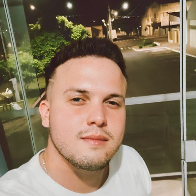

Fernando Maciel das Neves
Sou um estudante dedicado de Análise e Desenvolvimento de Sistemas, buscando aprimorar meus conhecimentos e habilidades para ingressar no dinâmico mundo da tecnologia. Atualmente, concilio meus estudos com o trabalho na área elétrica em um abatedouro de aves aqui no Brasil, o que me ensina a ser proativo e a lidar com diferentes responsabilidades. Acredito que essa experiência profissional na área elétrica pode me trazer uma perspectiva prática e valiosa para a resolução de problemas no campo da tecnologia, e minha forte vontade de transição para essa área reflete minha sede por inovação e desenvolvimento
Minhas habilidades
- Estudante Dedicado
- Busca por Aprimoramento
- Capacidade de Conciliar Responsabilidades
- Experiência Prática e Perspectiva de Resolução de Problemas
- Vontade de Inovação e Desenvolvimento